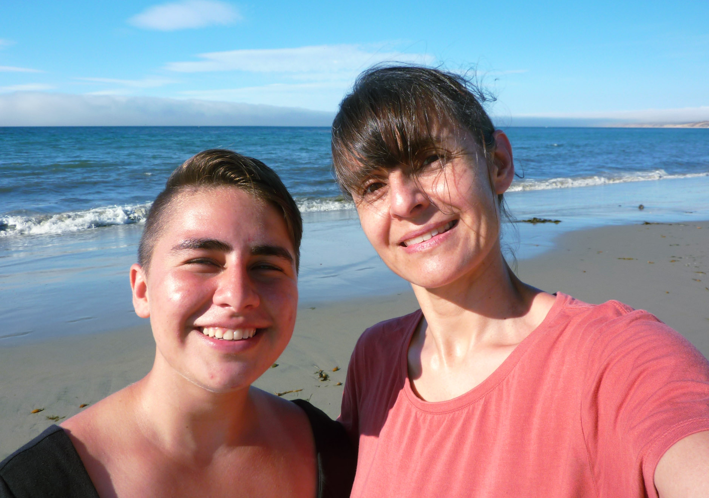

Who I Am
And what I do.

Hi, I'm Annalise, a visual artist living and practicing in NYC. I focus mainly in oil and acrylic painting, but also have passion in graphic design, videography, and computer programming.
I am in the process of finishing my Bachelor of Arts in visual arts and computer science at Columbia University and plan to continue growing my artistic practices. I enjoy programming too and hope to continue progressing my skills in that field as well.
There are plenty of ways to get in contact with me, so please feel free to reach out if you'd like. I'm open to both art-based and tech-based opportunities.